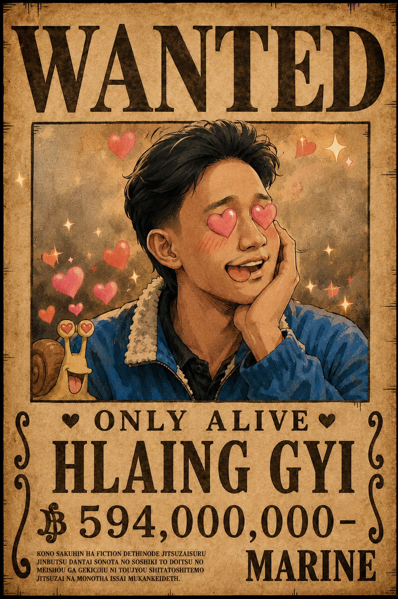
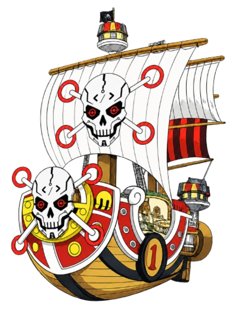

BACKBENCHERS PIRATES
Heating the pan… 🔥

A gentleman never lets a lady go hungry. 🥢 I'm a love-cook who treats every plate like a love letter — calm hands, a lit cigarette, and a heart that catches fire the moment the pan does. When the heat is on I light up Diable Jambe and dance through the galley. I sail with the Backbenchers Pirates, chasing the legendary sea of All Blue… and maybe, just maybe, true love along the way. Mellorine~! 😍🔥
Fiery in the kitchen, soft for the ladies. 💘
I'm MG Hlaing Gyi — the Black Leg, cook of the Backbenchers Pirates. I fight with my legs so my hands stay perfect for the knife and the plate. Every dish I serve is made with a little fire and a lot of love — because a meal should make your heart skip just like the cook's does. I'll flambé a sauce, swoon at a kind smile, and chase the dream of All Blue, the one sea where every flavour in the world swims together. Anything for you, my lady~ 🌹
The cook's holy grail — the sea where North, South, East and West Blue all meet. Every ingredient, every flavour, in one place. I'll sail to the end of the Grand Line to taste it.
When the kitchen heats up, so do I. Devil's Leg — a hurricane of fire and footwork. Too hot to handle, just hot enough to sear the perfect crust. Bugs get kicked; the cook's hands never do.
Every dish is a love letter. I cook for the people I adore and the strangers who'll become friends. Plated to perfection, served with a wink. Mellorine~ if it makes you smile, it was worth the fire.
Every service, plated and remembered. 🍳
Running the pass aboard the Thousand Sunny — every plate that leaves my kitchen carries a little fire and a lot of heart. No crewmate sails on an empty stomach.
Specialising in dishes that make hearts melt. A candlelit plate, a swoon, a dramatic nosebleed — all in a day's work for a gentleman who cooks with love. Mellorine~! 😍
Learned the kick and the knife the hard way — long hours, hotter fires, and a vow to never waste a grain of food. Discipline first; the fireworks came later.
Breakfast, banquet or midnight snack — if you're hungry, the galley's open. A full crew is a happy crew.
Never raise a hand to a lady, never waste food, never let a guest leave unhappy. Chivalry, served warm.
A cigarette, a golden sunset, a roaring stove — the busier it gets, the cooler the cook keeps his head.
In my galley, every flame and blade answers to me.
Notes, dishes and love letters from the galley.
How to make someone fall in love at first bite — garnish, timing, and a wink served on the side.
When to bring the heat and when to let it rest — a love-cook's guide to flame without the burns.
Prep like a gentleman: everything in its place so service feels like a slow dance, not a brawl.
Got a craving, a collab, or just want to say hello? The galley's always open. 💌
